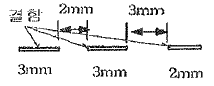
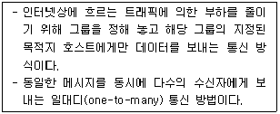

침투비파괴검사기사(구) (2009-03-01 기출문제)
1과목: 침투탐상시험원리
1. 침투탐상시험 후 후처리를 해야 하는 가장 주된 이유는?
- 변색을 방지하기 위함이다.
- 균열 발생을 방지하기 위함이다.
- 부식의 발생을 방지하기 위함이다.
- 침전되는 것을 방지하기 위함이다.
(정답률: 알수없음)

2. 사용중인 항공기 터빈 브레이드는 니켈합금, 코발트 합금으로 만들어지며, 발생되는 결함은 대부분 피로에 의한 미세한 결함들이다. 다음 중 이러한 미세결함을 검출하는데 가장 이상적인 침투탐상시험법은?
- 건식현상법에 의한 수세성 형광침투탐상시험
- 건식현상법에 의한 후유화성 형광침투탐상시험
- 무현상법에 의한 용제제거성 형광침투탐상시험
- 속건식현상법에 의한 용제제거성 염색침투탐상시험
(정답률: 알수없음)
3. 다음 중 침투탐상시험의 우현상법에 대한 설명으로 옳은 것은?
- 고감도 염색침투탐상법에 효과적이다.
- 자외선등의 감도가 현저하게 높아야 적용할 수 있다.
- 현상제를 적용하면 부품에 해가 되는 곳에 제한적으로 사용한다.
- 감도가 높은 침투제를 사용하면 현상제를 적용하는 것에 관계없이 사용되어야 한다.
(정답률: 알수없음)
4. 침투탐상시험시 시험체의 표면이 거칠고 시험장소를 어둡게 할 수 없는 경우에 가장 적절한 시험방법은?
- 수세성 형광침투탐상시험법
- 수세성 염색침투탐상시험법
- 후유화성 형광침투탐상시험법
- 용제제거성 염색침투탐상시험법
(정답률: 알수없음)
5. 다음 중 침투액의 염소와 황 함유량에 의해 영향을 받는 금속이 아닌 것은?
- 탄소강
- 티타늄
- 니켈합금
- 오스테나이트 스테인리스강
(정답률: 알수없음)
6. 다음 중 침투탐상시험의 유화제 특성에 대한 설명으로 틀린 것은?
- 부식성 및 독성이 없어야 한다.
- 침투액과 반응을 하지 않아야 한다.
- 중성이어야 하고 세척성이 좋아야 한다.
- 수분 등이 침투되어도 성능의 저하가 적어야 한다.
(정답률: 알수없음)
7. 헬륨질량분석 진공시스템 내부표면의 불순물 등에 흡수되어 있던 가스가 천천히 방출되면서 나타나는 허위누설을 무엇이라 하는가?
- 안개현상(Fog up)
- 가스유출(Out gassing)
- 장애현상(Hang up)
- 흐름신호(Flow signal)
(정답률: 알수없음)
8. 다음 비파괴검사법 중 알루미늄합금에 대한 결함 검출 감도가 가장 나쁜 것은?
- 방사선투과시험
- 초음파탐상시험
- 자분탐상시험
- 침투탐상시험
(정답률: 알수없음)
9. 와전류탐상시험에서 프로브형 팀촉자로 평판 형태의 시험편을 검사할 때, 시험편의 표면과 코일 사이의 간격이 변화하면 와전류 신호가 발생한다. 이러한 현상을 정의하는 용어는?
- 충전율(fill factor)
- 리프트 오프(lift off)
- 위상분별(phase analysis)
- 모서리 효과(edge eftect)
(정답률: 알수없음)
10. 방사선투과시험에서 사진처리작업 중 정착얼룩과 정착액의 성능저하를 방지하기 위해 처리하는 작업은?
- 현상처리
- 정자처리
- 정착처리
- 수세처리
(정답률: 알수없음)
11. 비자성체의 표면 및 표면작하 결함을 표면 개구 여부에 관계없이 검출하고자 할 때 다음 중 어느 방법이 가장 적합한가?
- 자분탐상시험
- 침투탐상시험
- 음향방출시험
- 와전류탐상시험
(정답률: 알수없음)
12. 다음 중 비파괴검사의 종류와 그 특성을 연결한 것으로 틀린 것은?
- 음향방출시험 - 동적 결함검사
- 와전류탐상시험 - 전도체의 표면검사
- 전자초음파공명법 - 고온재료의 접촉검사
- 핵자기공명 단층영상법 - 수소원자핵의 분포를 영상화
(정답률: 알수없음)
13. 다음 비파괴검사법 중 발생 중인 결함의 검출에 가장 효과적인 시험법은?
- 음향방출시험
- 초음파탐상시험
- 와전류탐상시험
- 중성자투과시험
(정답률: 알수없음)
14. 다음 중 납 용기나 철 케이스 내에 들어 있는 물지의 양을 검사하는데 효과적인 비파괴검사법은?
- 누설검사
- 침투탐상시험
- 초음파탐상시험
- 중성자투과시험
(정답률: 알수없음)
15. 결함의 종류에 따른 비파괴시험 방법을 열거한 것으로 적절하지 않은 것은?
- 언더컷의 검출은 방사선투과시험
- 내부기공의 검출은 자분탐상시험
- 변형은 게이지를 이용한 육안검사
- 표면에 개방된 균열의 검출은 침투탐상시험
(정답률: 알수없음)
16. 다음 중 방사선투과시험과 비교한 초음파탐상시험의 장점이 아닌 것은?
- 시험체 두께에 대한 영향이 적다.
- 미세한 균열성 결함의 검사에 유리하다.
- 결함의 형태와 종류를 쉽게 알 수 있다.
- 한쪽 면에서만 접근할 수 있어도 탐상이 가능하다.
(정답률: 알수없음)
17. 다음 중 침투탐상제를 이용한 누설시험에서 침투탐상시험과는 달리 포함되지 않아도 되는 절차는?
- 전처리
- 침투처리
- 세척처리
- 현상처리
(정답률: 알수없음)
18. 다음 중 초음파탐상시험에서 두꺼운 판의 용입부족을 검출하는데 가장 좋은 방법은?
- 평행 주사
- 지그재그 주사
- 탠덤(tandem) 주사
- 오비탈(orbital) 주사
(정답률: 알수없음)
19. 다음 중 발포누설시험법(Bubble Test)의 장점이 아닌 것은?
- 큰 누설을 쉽게 찾음
- 누설부위를 직접 검출 가능
- 시험이 간단하고 비용이 저렴
- 시험방법 중 작은 결함에 대한 감도가 가장 우수
(정답률: 알수없음)
20. 다음 중 방사선투과시험의 장점이 아닌 것은?
- 내부결함의 검출이 가능하다.
- 물질의 큰 조성 변화 검출이 가능하다.
- 검사결과를 영구적으로 기록할 수 있다.
- 방사선빔 방향에 평행한 판형결함의 검출이 용이하다.
(정답률: 알수없음)
2과목: 침투탐상검사
21. 섬유강화 복합재료를 형광침투탐상검사할 때 침투액에 킬레이트 약품을 첨가하여 사용하기도 한다. 이 킬레이트 약품에 의하여 일어나는 현상은?
- 침투액의 점성을 감소시킨다.
- 침투액의 건조속도를 빠르게 한다.
- 형광침투액의 침투속도를 증가시킨다.
- 형광 물질에서 발생되는 파장에 비해 더 긴 파장의 형광이 발생된다.
(정답률: 알수없음)
22. 규격으로 정해지지 않는 일반적인 경우 침투탐상검사시 침투시간을 토대로 현상시간을 결정한다. 이 경우에 침투시간이 30분이라면 다음 중 적당한 현상시간은?
- 5분
- 15분
- 30분
- 60분
(정답률: 알수없음)
23. 다음 중 일반적인 염색침투탐상검사를 하는 장소와 염색침투액의 색을 옳게 나열한 것은?
- 밝은 장소 - 녹색
- 밝은 장소 - 적색
- 어두운 장소 - 녹색
- 어두운 장소 - 적색
(정답률: 알수없음)
24. 과잉침투액의 제거 방법 중 수세법과 비교할 때 후유화제법의 장점은?
- 강도 조절이 용이하다.
- 전체적인 탐상검사 시간이 짧다.
- 미세한 균열에 대한 감도비가 높다.
- 과잉침투제의 제거는 물 분사만으로 완료될 수 있다.
(정답률: 알수없음)
25. 다음 중 용제제거성 형광침투탐상검사시 실온에서 휘발이 잘 되어 신속히 건조되므로 별도의 건조나 가열이 불필요하며, 현상제의 용제작용 때문에 불연속의 침투액이 용해되므로 시험체를 담금질하는 것이 금지된 현상제는?
- 건식현상제
- 습식현상제
- 필름현상제
- 속건식현상제
(정답률: 알수없음)
26. 후유화성 침투액을 사용할 때 물베이스 유화제를 적용하는 경우 예비세척처리 과정을 거치는 이유는?
- 유화시간을 줄이기 위하여
- 결함검출 감도를 높이기 위하여
- 건조처리 과정을 생략하기 위하여
- 배액과 유화조 내의 오염을 최소화하기 위하여
(정답률: 알수없음)
27. 다음 중 침투탐상검사에서 침투액의 침투성능을 결정하는 가장 중요한 요소는?
- 비중
- 상대밀도
- 화학적 불활성
- 표면장력 및 적심성
(정답률: 알수없음)
28. 다음 중 시험체 표면의 표면거칠기가 가장 매끄러운 것은?
- 0.8S
- 5.0S
- 6.3S
- 25S
(정답률: 알수없음)
29. 다음 침투탐상검사 장치 중 배액처리, 분무나 침적법에 필요한 탐상장치는?
- 전처리장치
- 침투처리장치
- 유화처리장치
- 현상처리장치
(정답률: 알수없음)
30. 다음 불연속 중 일반적인 침투탐상검사법으로 검출할 수 없는 것은?
- 표면기공
- 표면균열
- 표면적하 기공
- 분산한 지시모양
(정답률: 알수없음)
31. 다음 중 주조품의 일치가공 불연속으로 분류할 수 있는 것은?
- 기공
- 용입부족
- 피로균열
- 응력부식균열
(정답률: 알수없음)
32. 다음 중 침투액과 구별하기 위해 유화제에 가장 널리 사용되는 착색은?
- 흑색 또는 황색
- 적색 또는 백색
- 녹색 또는 백색
- 오렌지색 또는 핑크색
(정답률: 알수없음)
33. 다음 중 형광 침투액에 기름베이스 유화제를 사용하는 경우 유화시간으로 적합한 것은?
- 1~3분
- 5~10분
- 20~30분
- 30~60분
(정답률: 알수없음)
34. 다음 중 현상제에 필요한 일반적 특성으로 틀린 것은?
- 침투액을 흡출하는 능력이 좋아야 한다.
- 침투액을 분산시키는 능력이 좋아야 한다.
- 배경 색채와 구별될 수 있는 색채이어야 한다.
- 시험 표면에 대해 분리가 잘되고 현상막이 생기지 않아야 한다.
(정답률: 알수없음)
35. 다음 중 침투탐상검사에 사용되는 자외선등의 선원으로 가장 적합한 것은?
- 백열등
- 탄소아크
- 수은증기램프
- 원형 BL 형광램프
(정답률: 알수없음)
36. 수세성 형광침투탐상검사에서 현상제 적용 후 열풍 건조처리를 해야 하는 현상법은?
- 무현상법
- 건식현상법
- 습식현상법
- 속건식현상법
(정답률: 알수없음)
37. 다음 중 수세성 형광침투탐상검사의 장점에 대한 설명으로 옳은 것은?
- 가장 미세한 결함의 탐상에 적합하다.
- 앝은 표면 결함을 검출하는데 적합하다.
- 수분의 혼입 또는 온도의 영향에 의한 성능 저하가 적다.
- 표면이 거칠고 형상이 복잡한 시험체의 탐상이 가능하다.
(정답률: 알수없음)
38. 사용 중인 탐상제를 비교, 점검하기 위한 기준탐상제를 옳게 설명한 것은?
- 적용 규격에 정해진 침투용 탐상제
- 결함지시의 모양을 표준화하는데 사용되는 탐상제
- 신규 탐상제 구입시 일부를 청결한 용기에 채취하여 보존된 탐상제
- 탐상 감도를 높이기 위하여 사용 중인 탐상제에 첨가하여 사용되는 탐상제
(정답률: 알수없음)
39. 침투탐상검사 결과 시험관 표면에 나타난 둥근지시모양은 다음 중 어떤 것에 기인된 것으로 볼 수 있는 가?
- 기공(gas holes)
- 핫티어(hot tear)
- 용접 겹침(weld laps)
- 피로 터짐(faligue crack)
(정답률: 알수없음)
40. 다공질 재료나 세라믹 제품의 표면에 극미립자 분말을 현탁시킨 액체를 적용하면 액체는 검사체 전체 표면에 흡입되지만 표면 균열 개구부에서는 건전부에 비하여 많은 미립자 분말이 잔류, 축적된다. 이런 축적된 미립자에 의해 형성된 지시모양으로 결함의 존재 유무를 알 수 있는 침투탐상검사법은?
- 역형광법
- 하전입자법
- 여과입자법
- 기체 방사성 동위원소법
(정답률: 알수없음)
3과목: 침투탐상관련규격
41. 보일러 및 압력용기에 대한 표준침투탐상검사(ASME Sec.V.Art.24 SE-165)에서는 형광침투탐상시험시 자외선등의 세기를 몇 일마다 점검하도록 하고 있는가?
- 7일
- 15일
- 30일
- 60일
(정답률: 알수없음)
42. 보일러 및 입력용기에 대한 침투탐상검사(ASME Sec.V.Art.6)에서 용접부위에 대해 탐상시험을 할 때 전처리 과정에서 용접부위와 인접 경계면은 적어도 몇 cm 이내에 있는 오물, 구리스, 녹 등을 제거하도록 규정하고 있는가?
- 1.27cm
- 2.54cm
- 3.81cm
- 5.08
(정답률: 알수없음)
43. 침투탐상 시험방법 및 침투지시모양의 분류(KS B 0816)에 규정된 침투시간의 설명 중 틀린 것은?
- 적절한 침투시간은 침투액의 성질, 적용 온도 등에 따라 좌우된다.
- 침투시간은 5~60분까지의 범위에서 변화시킬 수 있다.
- 어떤 경우라도 침투시간 중에 침투액은 건조시켜야한다.
- 적절한 침투시간은 시험체 및 검출하여야 할 홈의 종류 등에 따라 좌우된다.
(정답률: 알수없음)
44. 보일러 및 압력용기에 대한 침투탐상검사(ASME Sec.V.Art.6)에 따라 시험체의 일부분을 탐상시험하는 경우 전처리에 대한 설명으로 옳은 것은?
- 시험부위만 전처리한다.
- 시험부위 바깥쪽으로 0.5인치 넓게 전처리한다.
- 시험범위 바깥쪽으로 1인치 넓게 전처리한다.
- 시험범위 바깥쪽으로 2인치 넓게 전처리한다.
(정답률: 알수없음)
45. 보일러 및 압력용기에 대한 침투탐상검사(ASME Sec.V.Art.6)에 의한 탐상시험의 표면온도 범위는?
- 10℃ 미만
- 10℃ 이상 52℃ 이하
- 52℃ 이상 87℃ 이하
- 87℃ 초과
(정답률: 알수없음)
46. 항공 우주용 기기의 침투탐상 검사방법(KS W 0914)에 의한 저감도 레벨의 수세성 침투탐상시험을 실시할 때 세척용 스프레이 노즐과 시험체 표면 사이에 허용되는 최소 거리는?
- 15cm
- 30cm
- 45cm
- 60cm
(정답률: 알수없음)
47. 항공 우주용 기기의 침투탐상 검사방법(KS W 0914)에서 group 의 의미로 옳은 것은?
- 용제제거성 염색침투탐상시험법
- 후유화성 염색침투탐상시험법
- 수세성 염색침투탐상시험법
- 용제제거성 형광침투탐상시험법
(정답률: 알수없음)
48. 침투탐상 시험방법 및 침투지시모양의 분류(KS B 0816)에 따른 침투탐상시 전수검사를 수행한 시험품에 합격 표시가 필요한 경우 표시 방법 중 틀린 내용은?
- 각인 또는 부식에 의한 표시를 할 때에는 P의 기호를 사용한다.
- 각인 또는 부식에 의한 표시가 곤란할 때는 착색(적갈색)한다.
- 시험품에 표시할 수 없을 경우는 시험기록에 기재한 방법에 따른다.
- 시험품에 Ⓟ의 기호 또는 착색(황색) 표시한다.
(정답률: 알수없음)
49. 침투탐상 시험방법 및 침투지시모양의 분류(KS B 0816)의 침투시간에 관한 사항으로 옳은 것은?
- 침투액 종류, 시험체 재질의 온도에 큰 영향을 받지 않는다.
- 일반적으로 온도는 5~50℃로 한다.
- 3~15℃ 범위에서는 침투시간을 늘리고, 50℃를 넘거나 3℃이하인 경우 침투액의 종류와 시험체 온도 등을 고려하여 정한다.
- 침투액 및 시험체 온도가 50℃이상인 경우 침투시간을 늘리고, 3℃이하인 경우 침투시간을 줄인다.
(정답률: 알수없음)
50. 침투탐상 시험방법 및 침투지시모양의 분류(KS B 0816)에 따른 침투탐상에 사용되는 A형 대비시험편의 재료는 KS D 6701에 규정한 것을 사용하는데 이 재료로 옳은 것은?
- Cu(구리)
- Au(금)
- Al(알루미늄)
- Fe(철)
(정답률: 알수없음)
51. 보일러 및 압력용기에 대한 침투탐상검사(ASME Sec.V.Art6)에 따라 원자력발전 부품에 형광침투탐상시험을 착용시 검사체의 표면온도가 30℃일 때 다음 중 맞는 내용은?
- 현상제를 30°F로 맞춘 후 시험한다.
- 부품을 50~125°F범위로 맞춘 후 시험한다.
- 침투탐상제를 30°F로 맞춘 후 시험한다.
- 방사선투과검사법을 적용해야 한다.
(정답률: 알수없음)
52. 보일러 및 압력용기에 대한 침투탐상검사(ASME Sec.V.Art.6)에 대한 설명이다. 틀린 것은?
- 제조자가 서로 다른 침투탐상제를 혼합하여 사용하여서는 안된다.
- 수세성침투액으로 재검사를 하면 불순물로 인하여 미세한 지시모양이 나타나지 않을 수 있다.
- 침투액을 압축공기장치를 이용한 분무법을 적용하는 경우 공기취입구 근처의 상류쪽에 필터를 부착해야 한다.
- 형광침투탐상법과 염색침투탐상법을 병행할 경우 염색침투탐상검사를 먼저 수행하여야 한다.
(정답률: 알수없음)
53. 항공 우주용 기기의 침투탐상 검사방법(KS W 0914)에서 수세성 과잉침투액을 물로 세척하는 경우 적절한 물의 온도 범위는?
- 0℃~10℃
- 10℃~38℃
- 38℃~72℃
- 72℃~90℃
(정답률: 알수없음)
54. 침투탐상 시험방법 및 침투지시모양의 분류(KS B 0816)에 따라 압력용기를 침투탐상시험하였더니 그림과 같은 결함이 나타났다. 이 결함의 길이는?

- 3개의 결함, 각각 3mm, 3mm, 2mm
- 2개의 결함, 각각 8mm, 2mm
- 1개의 결함 8mm
- 1개의 결함 13mm
(정답률: 알수없음)
55. 침투탐상 시험방법 및 침투지시모양의 분류(KS B 0816)에 따라 침투탐상시험시 검사체의 온도가 3~15℃범위에 있는 경우 침투시간은?
- 온도를 고려하여 침투시간을 늘린다.
- 온도를 고려하여 침투시간을 줄인다.
- 침투시간은 변하지 않는다.
- 표준침투시간으로 한다.
(정답률: 알수없음)
56. 다음은 국가를 나타내는 도메인들이다. 영국에 해당하는 도메인 명은?
- au
- ca
- uk
- fr
(정답률: 알수없음)
57. 다음 중 인터넷상에서 정보와 의견을 교환하기 위한 토론 그룹은?
- 고퍼
- 아키
- 텔넷
- 유즈넷
(정답률: 알수없음)
58. 해커가 해킹을 하여 사용자 권한을 얻어낸 후 시스템 관리자의 권한을 훔치고, 이후 자신이 다음에 재 침입할 것을 대비하여 만들어 놓고 나가는 프로그램을 무엇이라 하는가?
- 웜
- 스파이웨어
- 애드웨어
- 백도어
(정답률: 알수없음)
59. 다음 중 컴퓨터 운영체제에 대한 설명으로 틀린 것은?
- 하드웨어와 응용 프로그램간의 인터페이스 역할을 한다.
- CPU, 주기억장치, 입출력장치 등의 컴퓨터 지원을 관리한다.
- 컴퓨터 시스템의 전반적인 동작을 제어하는 시스템 프로그램의 집합니다.
- 사용자가 작성한 원시프로그램을 기계어로 된 목적프로그램으로 변환한다.
(정답률: 알수없음)
60. 다음이 설명하고 있는 통신 방식은?

- 멀티캐스트
- 유니캐스트
- 애니캐스트
- 라우팅
(정답률: 알수없음)
4과목: 금속재료학
61. 다음 중 주철의 성장을 방지하는 방법으로 틀린 것은?
- C 및 Si의 양을 적게한다.
- 구상흑연을 편상화시킨다.
- 흑연의 미세화로 조직을 치밀하게 한다.
- Cr, Mo, V 등을 첨가하여 펄라이트 중의 Fe3C 분해를 막는다.
(정답률: 알수없음)
62. 다음 중 구상흑연 주철에 대한 설명으로 옳은 것은?
- 인장강도는 20kgf/mm2 이하이다.
- 주조상태에서 흑연이 구상으로 정출한다.
- 피로한도는 회주철에 비해 1.5~2.0배 낮다.
- 구상흑연주철의 기지 조직은 페라이트만 존재한다.
(정답률: 알수없음)
63. 고강도 알루미늄 합금에서 둘랄루민과 초초두랄루민계는 어느 계통의 합금인가?
- Al - Cu - Mg 계, Al - Zn - Mg 계
- Al - Fe - Mn 계, Al - Si - Mg 계
- Al - Mn - Co 계, Al - Mn - Sn 계
- Al - Mg - Sn 계, Al - Cu - Ni 계
(정답률: 알수없음)
64. Mg 금속에 대한 설명으로 틀린 것은?
- 비중이 약 1.7 정도이다.
- 알루미늄보다 쉽게 부식한다.
- 면심입방격자(FCC) 구조를 갖는다.
- Zr의 첨가로 결정립은 미세하고, 희토류원소의 첨가로 고온크리프 특성이 우수하다.
(정답률: 알수없음)
65. 다음 중 Ni - Fe 합금이 아닌 것은?
- Nicalloy
- Permalloy
- Platnite
- Elektron
(정답률: 알수없음)
66. 100배로 확대된 다결정 금속재료의 내부조직 사진에서 평방인치당 결정립자의 수가 64개월일 때 이 금속 재료의 ASTM 결정입도는?
- 3
- 5
- 7
- 9
(정답률: 알수없음)
67. 다음 초경합금 분말을 혼합 제조할 때 가열온도가 가장 높은 조건은?
- Ti + C
- TiO2 + C
- W + TiO2 + C
- WC + TiO2 + C
(정답률: 알수없음)
68. Hadfield 강에 대한 설명으로 틀린 것은?
- 오스테나이트 조직을 가진 강이다.
- 고온에서 서냉하면 결정립계에 M3C 가 석출한다.
- 고온에서 서냉하면 오스테나이트가 마텐자이트로 변태한다.
- 열전도성이 좋으며, 팽창계수도 작아 열변형이 없다.
(정답률: 알수없음)
69. 기계적 강도, 열적 특성 및 내식성 등을 충분히 향상시켜 하중을 지탱하고 열 등에 견뎌야 하는 구조물 또는 그 부품에 사용하는 파인 세라믹스는?
- 바이오 세라믹스(bio ceramics)
- 엔지니어링 세라믹스(engineering ceramics)
- 일렉트로닉 세라믹스(electronic ceramics)
- 트레디셔널 세라믹스(traditional ceramics)
(정답률: 알수없음)
70. 다음 중 강제적으로 완전 탈산시킨 강은?
- Killed 강
- Rimmed 강
- Cappde 강
- Semi-killed 강
(정답률: 알수없음)
71. 금속의 회복(recovery)에 대한 설명 중 틀린 것은?
- 결정 내부의 변형에너지가 감소하는 현상이다.
- 전기저항은 회복의 과정에서 서서히 증가하는 현상이다.
- 결정 내부의 항복강도가 감소하는 현상이다.
- 전위의 일부가 소멸되거나 또는 재배열되는 현상이다.
(정답률: 알수없음)
72. 공정형 상태도를 나타내는 대표적인 합금은?
- Cu - Ni
- Au - Ag
- Al - Si
- Cd - Hg
(정답률: 알수없음)
73. β - Sn 이 α - Sn 으로 변태하는 이론적인 온도는 약 몇 ℃인가?
- 13
- 55
- 100
- 150
(정답률: 알수없음)
74. Cr계 스테인리스강의 취성에 대한 설명 중 틀린 것은?
- 고온취성은 700℃ 부근에서 나타난다.
- 저온취성은 페라이트 강에서 나타난다.
- 475℃ 취성은 크롬 15% 이상의 스테인리스강에서 375~540℃로 장시간 가열하면 나타난다.
- σ취성은 800℃ 이상에서 가열하여 급냉하면 인성을 회복한다.
(정답률: 알수없음)
75. 일반적으로 사용한도가 300℃까지 사용할 수 있는 열전대는?
- Pt - Pt·Rh
- Cu - Constantan
- Chromel - Alumel
- Fe - Constantan
(정답률: 알수없음)
76. 특수강 중에 각종 원소의 첨가 효과를 설명한 것으로 틀린 것은?
- Ni 는 탄소와의 친화력이 낮고, 페라이트에 고용된다.
- Cr 은 소입성을 개선하는 효과가 Ni보다 우수하다.
- Mo 을 첨가한 Mo 강은 400℃ 부근까지 고온강도를 개선한다.
- Mn의 첨가량이 1.0% 이상이 되면 결정입자를 미세하게 하고 취성을 방지한다.
(정답률: 알수없음)
77. 다음 중 Pb 이 포함된 베어링 합금이 아닌 것은?
- Kelmet
- White metal
- Bahmetal
- Monel metal
(정답률: 알수없음)
78. 구리에 함유된 불순물 중 전기 전도도에 가장 악영향을 미치는 원소는?
- Ti
- Pb
- Mn
- Au
(정답률: 알수없음)
79. 다음 동합금에 대한 설명으로 틀린 것은?
- Cu-Be 합금은 분산강화형 합금이다.
- 60%Cu-40%Zn 합금은 Muntz metal 이라 하고 α상과 β상을 포함한 2중 조직을 하고 있다.
- 탄피황동을 부식분위기에 놓았을 때 발생하는 응력 부식 균열을 season cracking 이라 한다.
- 70%Cu-30%Zn 합금은 탄피황동(Cartridge brass)으로 불리며 강동외 연성이 우수하다.
(정답률: 알수없음)
80. 크로웰 경도 시험에서 가장 큰 하중을 사용하는 스케일은 무엇인가?
- A
- B
- C
- 15N
(정답률: 알수없음)
5과목: 용접일반
81. 용접작업시 수축량에 미치는 용접시공 조건의 영향에 대한 설명 중 틀린 것은?
- 루트 간격이 클수록 수축이 크다.
- 구속도가 크면 수축이 작다.
- 피복제의 종류에 따라 차이가 크다.
- 피닝을 하면 수축이 감소한다.
(정답률: 알수없음)
82. 아크 쏠림(Arc blow)의 방지대책으로 틀린 것은?
- 직류용접을 피하고 교류용접을 사용한다.
- 용접봉 끝을 아크 쏠림의 반대편으로 향하게 한다.
- 긴 용접에서는 후퇴법(Back step)으로 용접한다.
- 접지점은 가능한 한 용접부에 가까이 접지한다.
(정답률: 알수없음)
83. 용접부에 잔류응력이 생길 때의 처리방법으로 가장 적합한 것은?
- 풀림을 한다.
- 뜨임을 한다.
- 불림을 한다.
- 담금질을 한다.
(정답률: 알수없음)
84. 겹치기이음, T이음, 모서리이음에 있어서 거의 직교하는 두 면을 결합하는 3각형 단면의 용착부를 갖는 용접은?
- 맞대기 용접
- 필릿 용접
- 플러그 용접
- 비드 용접
(정답률: 알수없음)
85. 아크전류가 180A, 아크전압이 15V, 용접속도가 18cm/min일 때, 용접길이 1cm당 용접입열은 몇 Joule/cm인가?
- 9000
- 12960
- 18000
- 48600
(정답률: 알수없음)
86. 연강용 피복 아크 용접봉 종류 중 E4311의 피복제 계통은?
- 일루미나이트계
- 라임티타니아계
- 철분산화철계
- 고셀룰로오스계
(정답률: 알수없음)
87. 서브머지드 아크용접에서 와이어의 적당한 돌출길 이는 와이어 지름의 몇 배 전후로 하는 것이 적당한가?
- 2
- 4
- 6
- 8
(정답률: 알수없음)
88. 세로비드 노치 굽힘시험 방법으로 시험편의 표면에 세로길이로 비드 용접하여 이에 직각으로 V노치를 붙인 시험편을 구부리는 방법의 연성시험법은?
- 킨젤 시험
- 슈니트 시험
- 카안인열 시험
- 피스코 균열 시험
(정답률: 알수없음)
89. 산소-아세틸렌 불꽃의 종류가 아닌 것은?
- 중성 불꽃
- 산화 불꽃
- 탄화 불꽃
- 완성 불꽃
(정답률: 알수없음)
90. 용접법의 분류에서 저항 용접에서 해당하는 것은?
- 심 용접
- 테르밋 용접
- 스터드 용접
- 경납 eOA
(정답률: 알수없음)
91. 이음 형상에 따른 심 용접기의 종류가 아닌 것은?
- 횡 심 용접기
- 만능 심 용접기
- 종 심 용접기
- 인터랙 심 용접기
(정답률: 알수없음)
92. 기공 또는 용융 금속이 튀는 현상이 발생한 결과, 용접부 바깥면에서 나타나는 작고 오목한 구멍을 뜻하는 용어는?
- 피트(pit)
- 크레이터(crater)
- 홈(groove)
- 스패터(spatter)
(정답률: 알수없음)
93. 피복 아크용접에서의 아크 길이와 아크 전압과의 관계 설명으로 가장 적합한 것은?
- 아크 길이가 길어져도 아크 전압은 일정하다.
- 아크 길이가 길어지면 아크 전압은 증가한다.
- 아크 길이가 짧아지면 아크 전압은 증가하다.
- 아크 길이와 아크 전압은 서로 관계가 없다.
(정답률: 알수없음)
94. 교류용접기와 비교한 직류 용접기의 일반적인 특징 설명으로 틀린 것은?
- 구조가 간단하고 유지 관리가 쉽다.
- 아크의 안정성이 우수하다.
- 전격의 위험이 적다.
- 역률이 매우 양호하다.
(정답률: 알수없음)
95. 연강용 피복금속 아크 용접봉에 E4313 이라고 적혀있다면 용착금속의 최소 인장강도는 몇 N/mm2 이상인가?
- 420
- 300
- 130
- 110
(정답률: 알수없음)
96. 불활성 가스 텅스텐 아크 용접에서 사용되는 텅스텐 전극 중 스테인리스강의 용접에 적당한 것은?
- 순 텅스텐 전극봉
- 토륨 텅스텐 전극봉
- 바륨 텅스텐 전극봉
- 지르코늄 텅스텐 전극봉
(정답률: 알수없음)
97. 용접봉의 용융 속도에 관한 설명 중 틀린 것은?
- 단위 시간당 소비되는 용접봉의 길이로 나타낸다.
- 용융속도는 아크 전압과 관계가 있고 아크 전류와는 무관하다.
- 동일 종류의 용접봉인 경우 심선의 용융 속도는 전류에 비례한다.
- 동일 종류의 용접봉인 경우 심선의 용융 속도는 용접봉의 지름에는 관계가 없다.
(정답률: 알수없음)
98. 제품의 한쪽 또는 양쪽에 다수의 돌기를 만들어 이부분에 용접 전류를 집중시켜 접합하는 용접방법은?
- 점 용접
- 시임 용접
- 프로젝션 용접
- 업셋 용접
(정답률: 알수없음)
99. 서브머지드 아크용접에서 2개의 전극 와이어를 독립된 전원(교류 또는 직류)에 접속하여 용접선에 따라 전극의 간격을 10~30mm 정도로 하여 2개의 전극 와이어를 동시에 녹게 함으로써 한꺼번에 많은 양의 용착금속을 얻을 수 있는 용접법은?
- 횡 병렬식
- 탠덤식
- 횡 직렬식
- 스크래치식
(정답률: 알수없음)
100. 용접 결함의 분류 중에서 치수상 결함에 해당하는 것은?
- 스트레인 변형
- 용접부 융합불량
- 기공
- 용접부 접합불량
(정답률: 알수없음)